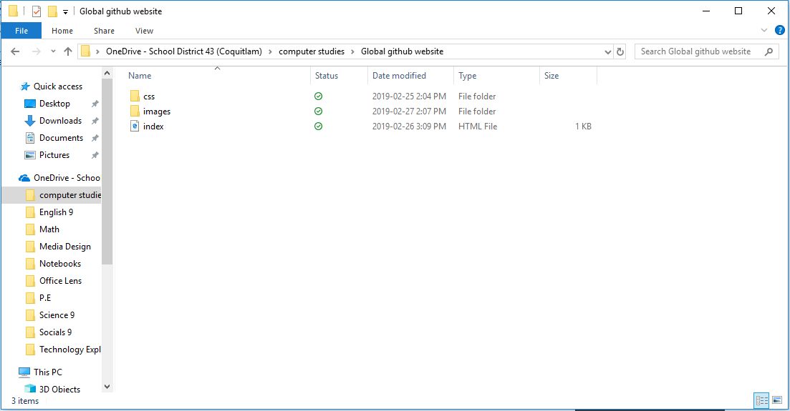
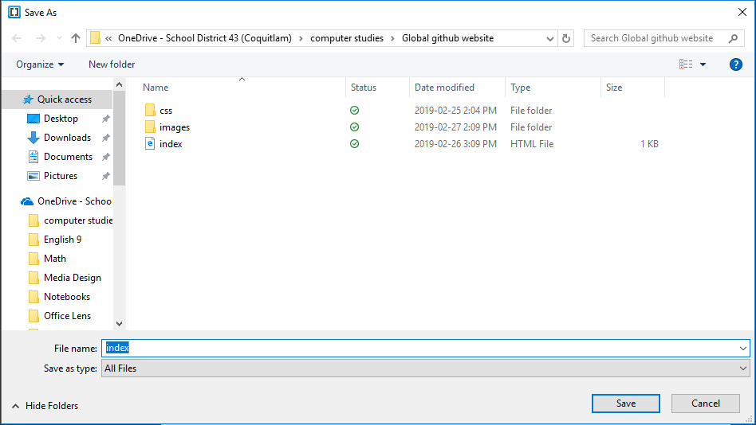
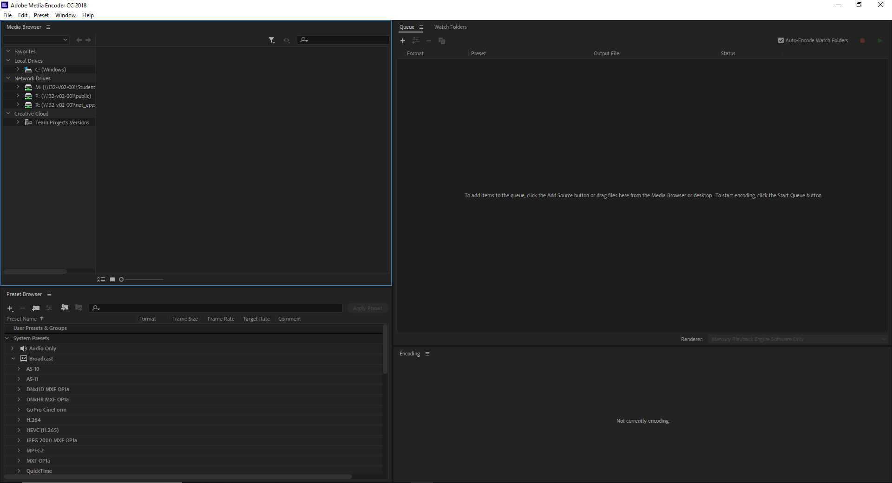
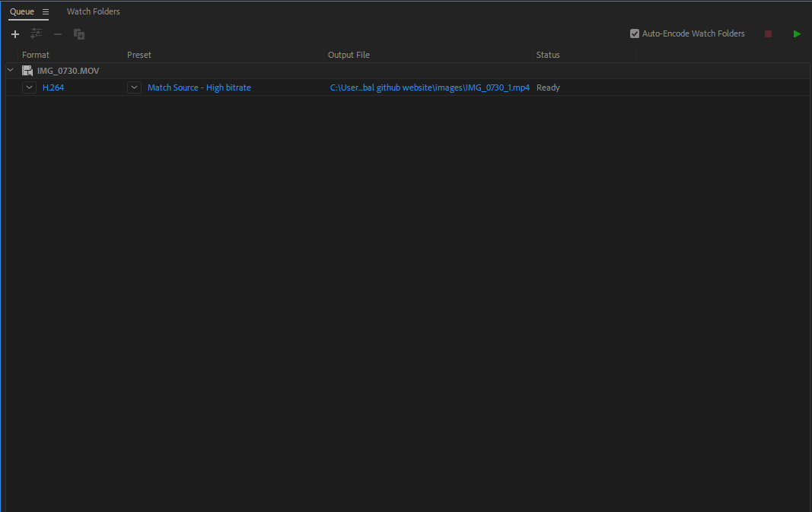
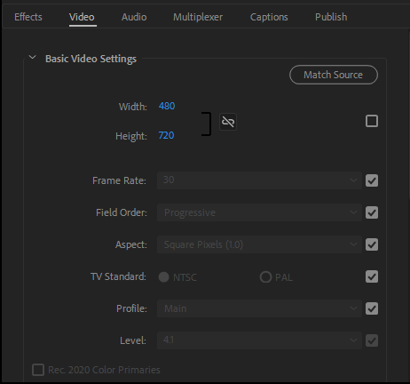
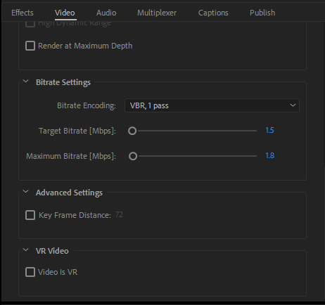
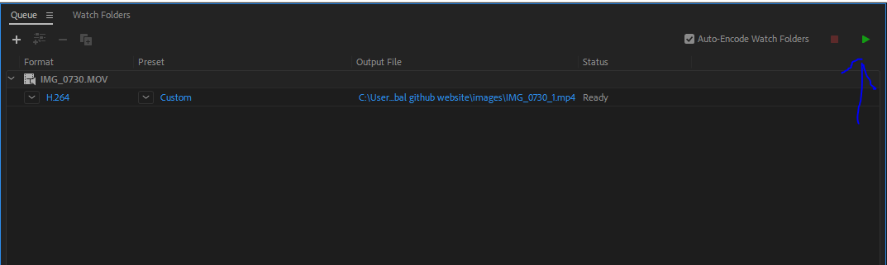
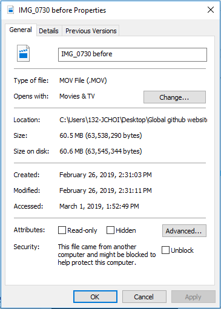
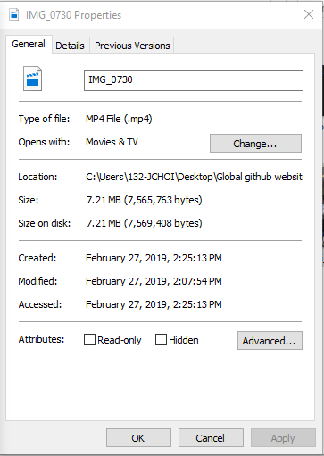

- You need tp create a file called "Global github website"
- You need create a files called "CSS" and "Images" in your "Golbal github website"file 
- You need to create a projrct in "Gobal github website" with using Brackets 
- And you make a code in there whatever you want!

How to encode the video and differences after I encoded the video
- You need to open the app call "Adobe Media Encoder 2018" 
- You put your video into the app 
- Click Match Source - High bitrate and change the height and width by 480 and 720 depends on is the video is wide or tall 
- Change the Target Bitrate to 1.5 and Maximum Bitrate to 1.8 
- Click the play button and is done!! 
My video before encoded
I can't put video that was before encoded because the file is too big
My video after encoded
And here are the differences
The video that was encoded took way less storage
Before encoded

After encoded

To go back to the top